Unidad Temática II. Instrucciones de Administración de Bases de Datos Relacionales
Unidad de competencia
Emplea instrucciones de administración de bases de datos a partir de un SMBDR.
Los siguientes temas se tratan en esta unidad
- 2.1 Consultas simples y multitabla
- 2.2 Administración de la seguridad e integridad de la información en un SMBDR
- 2.3 Control de concurrencia y técnicas de bloqueo
- 2.4 Transacciones, procedimientos almacenados, disparadores, funciones y cursores
- 2.5 Respaldos y recuperación de las Bases de Datos Relacionales
2.1 Consultas simples (una tabla) y multitabla (varias tablas)
Para poder comprender cómo se realizan las consultas del SQL (SELECT) primeramente debe de ser de manera progresiva, visual y práctica. Para lograrlo, el estudiante debe entender qué hace la consulta de forma gráfica y luego escribe el código, este enfoque se conoce como "Caja Negra a Caja Blanca".
Las consultas simples trabajan sobre una sola tabla y actúan como un colador de café, dejan pasar solo lo que nos interesa.
Para entender el tema de las consultas simples, imagina una tabla de Alumnos como una hoja de Excel llena de datos.
- SELECT: Elige qué columnas quieres ver (como ocultar columnas en Excel).
- FROM: Elige la hoja/tabla donde vas a buscar.
- WHERE: Es el botón de filtro. Solo pasan las filas que cumplen la condición.
Sintaxis del SQL
SELECT columna1, columna2
FROM nombre_tabla
WHERE condiciónFundamentos y Consultas Simples (Una tabla)
Es importante entender cómo filtrar, ordenar y proyectar datos de una única tabla. Para lograrlo es necesario conocer los conceptos de la sentencia del SELECT.
- Estructura básica: SELECT, FROM.
- Filtrado de registros: WHERE, operadores lógicos (AND, OR, NOT) y de comparación (BETWEEN, IN, LIKE, IS NULL).
- Ordenamiento y límites: ORDER BY, LIMIT / TOP.
- Alias de columnas (AS) y valores únicos (DISTINCT).
- Funciones de agregación: COUNT (), SUM (), AVG (), MIN (), MAX ().
- Agrupamiento: GROUP BY.
- Ordenamiento (columna): ORDER BY.
- Filtrado de grupos: HAVING (haciendo énfasis en su diferencia con WHERE).
1. Operadores aritméticos
Se utilizan para realizar operaciones matemáticas básicas.
| Operador | Significado |
|---|---|
+ | Suma |
- | Resta |
* | Multiplicación |
/ | División |
% | Módulo (resto de una división) |
2. Operadores de comparación (o relacionales)
| Operador | Significado |
|---|---|
= | Igual a |
<> o != | Distinto de / Diferente de |
> | Mayor que |
< | Menor que |
>= | Mayor o igual que |
<= | Menor o igual que |
!> | No mayor que |
!< | No menor que |
3. Operadores lógicos
Permiten combinar o evaluar múltiples condiciones, comúnmente en la cláusula WHERE.
- AND: Devuelve verdadero si todas las condiciones son verdaderas.
- OR: Devuelve verdadero si alguna de las condiciones es verdadera.
- NOT: Niega o invierte el resultado de la condición.
- ALL: Compara un valor con un conjunto de valores.
- ANY / SOME: Compara un valor con al menos uno de un conjunto.
- BETWEEN: Comprueba si un valor está dentro de un rango específico.
- EXISTS: Devuelve verdadero si una subconsulta devuelve filas.
- IN: Comprueba si un valor coincide con alguno de una lista de valores.
- LIKE: Busca patrones en cadenas de caracteres (usando comodines como %).
- IS NULL: Comprueba si un valor es nulo (NULL).
4. Operadores de asignación
=Asigna un valor a una variable o columna. (Ejemplo:SET @miVariable = 10;)
5. Operadores de concatenación de cadenas
+Concatena dos o más cadenas de caracteres. (Ejemplo:SELECT 'Hola ' + 'Mundo';)
Actividad UTII_A1_Consultas_Simples
Propósito
Utilizar un Sistema Manejador de Bases de Datos Relacional (SMBDR) ya sea SQL Server o MySQL u opcional.
La intención de esta actividad es que el estudiante comprenda las consultas simples que se realizan sobre un base de datos relacional, para este caso es el de utilizar las funciones del Select como son MIN, MAX, SUM y AVG sobre una sola tabla.
Instrucciones
1.- Utilizar la base de datos RBV_VETERINARIA o la que sugiera el docente, que ya contenga registros para poder realizar las consultas.
2.- Realiza las siguientes consultas simples de la base de datos Veterinaria o la que la sugiera el docente.
- Muestra el nombre y el teléfono de todos los Veterinarios.
- Muestra los veterinarios que tengan más de 40 años.
- Muestra los veterinarios que tengan la especialidad de nutrición.
- Muestra el nombre del veterinario, su edad y utilizando un alias Edad_Mínima presentar la edad mínima.
- Muestra el nombre del veterinario, su edad y utilizando un alias Edad_Máxima presentar la edad máxima.
- Muestra el nombre del veterinario, su edad y utilizando un alias Edad_Promedio presentar el promedio de las edades.
- Muestra el nombre del veterinario, su edad y utilizando un alias Total_Edades presentar la suma de las edades.
- Consultar el número total de cuantos veterinarios hay.
Evidencia que entregar
- Deberán entregar las seis (6) instrucciones del SQL (select) y mostrar el resultado de las instrucciones del select (evidencia script). Deberán enviarlo en un archivo PDF
- Subir esta evidencia a class room en la hora y fecha indicada
- El valor de la actividad es de 5 puntos.
Nota: Se anexan los scripts de las instrucciones de SQL
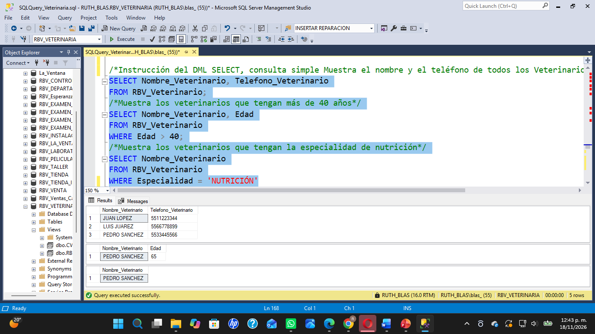
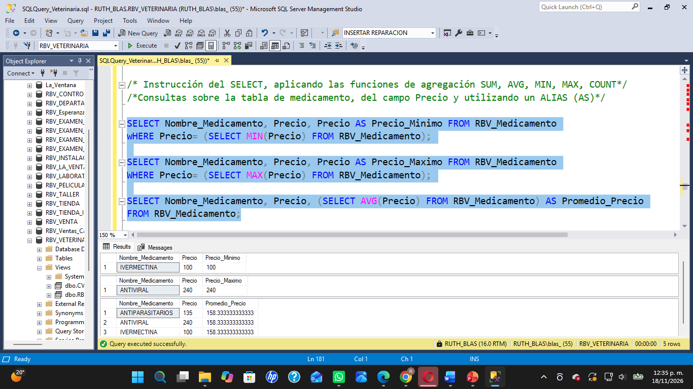
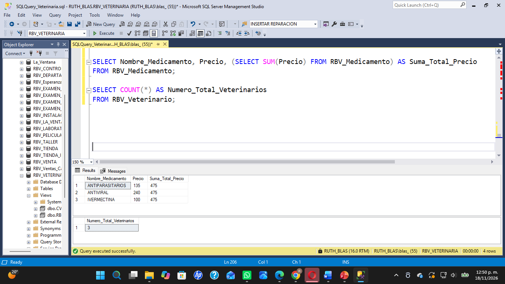
Consultas Compuestas varias tablas (El Poder de Relacionar)
Para iniciar primeramente se tiene que explicar por qué existen varias tablas. Por lo que se sugiere lo siguiente.
1. Relación entre tablas
- Repaso rápido de llaves primarias (PK) y llaves foráneas (FK), son las llaves en común que permiten que se relacionen las tablas.
Imagina que tienes una tabla Empleado y una tabla Ventas. Un Empleado tiene un Id_Empleado_PK, y en la tabla de Ventas se guarda ese mismo Id_Empleado_FK para saber quién hizo esa venta.
- El WHERE o el INNER JOIN: Es como encontrar las piezas del rompecabezas que encajan perfectamente mediante esa "llave" común.
2. Agrupaciones (El clasificador de monedas)
- GROUP BY: Imagina que tienes una montaña de monedas y las separas en montoncitos por su valor.
- HAVING: Es el filtro después de hacer los montoncitos. Por ejemplo, "Solo muéstrame los montoncitos que tengan más de 10 monedas".
3. Consultas Multitabla (JOINs)
- INNER JOIN: Intersección de datos (registros que coinciden en ambas tablas).
- LEFT JOIN y RIGHT JOIN: Inclusión de registros huérfanos o sin coincidencia (crucial para detectar datos faltantes, ej. "Empleados que nunca han vendido").
- Encadenamiento de múltiples JOIN (3 o más tablas).
- Uso de alias de tabla (
SELECT E.Nom_Emp, V.fecha FROM E Empleado E INNER JOIN Ventas V).
Actividad UTII_A2_Consultas_Multitabla
Propósito
Utilizar un Sistema Manejador de Bases de Datos Relacional (SMBDR) ya sea SQL Server o MySQL u opcional.
La intención de esta actividad es que el estudiante comprenda las consultas multitabla que se realizan sobre un base de datos relacional, para este caso es el de hacer consultas con más de una tabla utilizando el INNER JOIN o el WHERE.
Instrucciones
1.- Utilizar la base de datos RBV_VETERINARIA o la que sugiera el docente, que ya contenga registros para poder realizar las consultas.
2.- Realiza las siguientes consultas multitabla de la base de datos Veterinaria.
- Muestra el nombre del veterinario, de la mascota y la fecha que se atendió dicha mascota.
- Muestra el nombre de la mascota, la raza, el diagnóstico y la medicina.
- Muestra el nombre del dueño, la mascota, su especie y el nombre del veterinario.
Evidencia que entregar
- Deberán entregar las tres (3) instrucciones del SQL (select) y mostrar el resultado de las instrucciones del select (evidencia script). Deberán enviarlo en un archivo PDF
- Subir esta evidencia a class room en la hora y fecha indicada
- El valor de la actividad es de 5 puntos.
Nota: Se anexan los scripts de las instrucciones de SQL
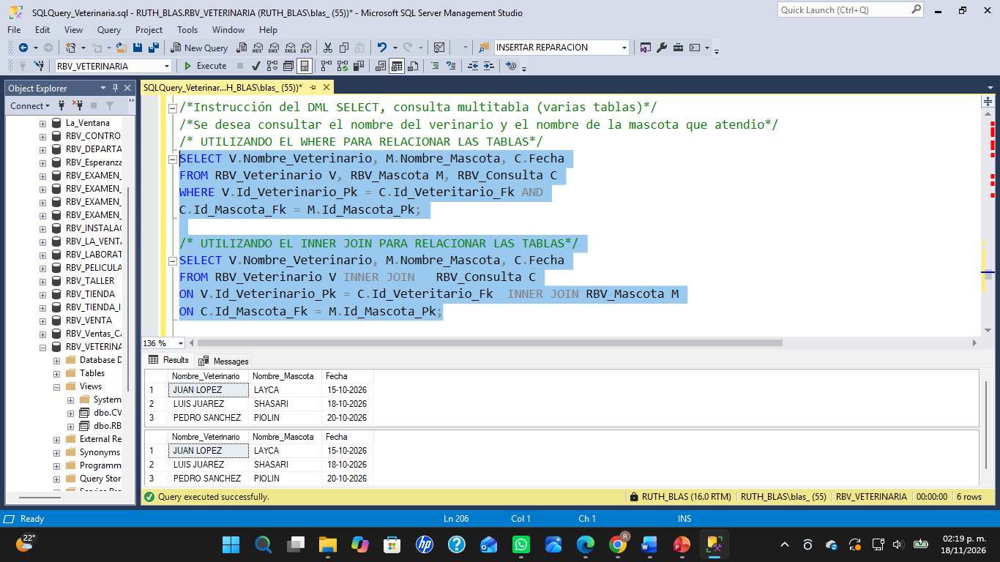
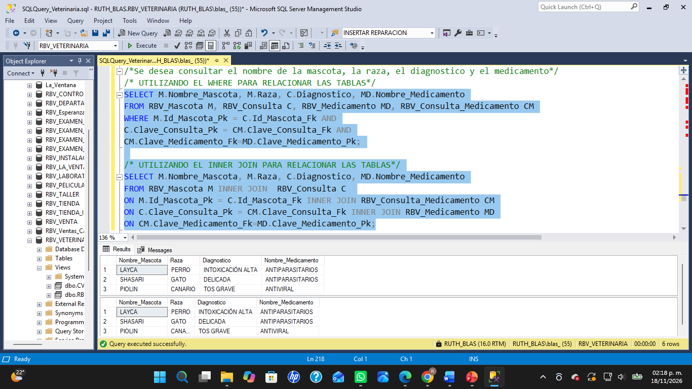
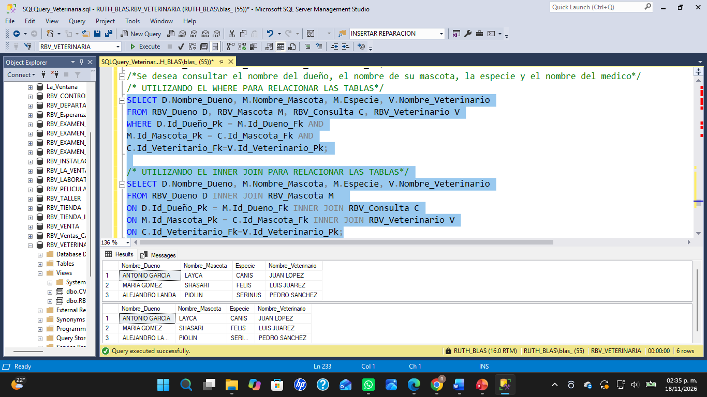
2.2 Administración de la seguridad e integridad de la información en un SMBDR
Recordemos que, para cualquier empresa, organización, escuela, hospital, hogar, etc. lo más importante es la información, para garantizar la confidencialidad, integridad y disponibilidad de dicha información frente a accesos no autorizados, es necesario implementar políticas, controles de acceso y restricciones estructurales en un SMBDR.
Para lograr lo anterior es necesario gestionar la identidad de los usuarios, roles y perfiles, para controlar a qué recursos puede acceder, por ejemplo, un usuario. La finalidad es proteger la información y asegurar que solo las entidades autorizadas tengan los permisos necesarios en el momento adecuado.
Mecanismos para asegurar la integridad de la información
Existen varios mecanismos para asegurar la integridad de la información de un SMBDR.
- Integridad de entidad (PRIMARY KEY, UNIQUE) y de dominio (CHECK, NOT NULL, tipos de datos).
- Integridad referencial (FOREIGN KEY y acciones en cascada como ON DELETE y ON UPDATE).
- Reglas de negocio complejas mediante disparadores (Triggers) y procedimientos almacenados (Stored Procedures).
- Sentencias DCL (Lenguaje de Control de Datos) como CREATE LOGIN, CREATE ROLE, GRANT y REVOKE.
Lenguaje de Control de Datos (DCL)
Es el momento adecuado para empezar a utilizar las instrucciones del DCL (Lenguaje de control de Datos).
Antes de empezar, es importante conocer en qué consiste el DCL. Este lenguaje consta de un conjunto de instrucciones que nos sirven para administrar privilegios.
| Instrucción | Función |
|---|---|
GRANT | Autoriza un privilegio sobre un objeto |
REVOKE | Retira un privilegio ya autorizado |
Privilegios sobre tablas y vistas a los usuarios
| Privilegio | Uso |
|---|---|
INSERT | Para agregar nuevos registros |
DELETE | Para borrar registros |
UPDATE | Para modificar valores de los registros |
SELECT | Para efectuar cualquier consulta |
Actividad UTII_AIII_Instrucciones_DCL
Propósito
Utilizar un Sistema Manejador de Bases de Datos Relacional (SMBDR) ya sea SQL Server o MySQL u opcional.
La intención de esta actividad es que el estudiante comprenda y utilice las instrucciones del DCL (Lenguaje de Definición de Datos) y aplicar la instrucción CREATE LOGIN de SQL, usando el SMBDR SQL Server Management Studio (opcional) para la creación de usuario y la aplicación de las instrucciones del DCL, como son el GRANT y el REVOKE.
Instrucciones
1.- Utilizar la instrucción CREATE LOGIN, para la creación de dos usuarios, Usuario_1 y Usuario_2 para otorgarle los privilegios. Entrar con el Usuario_1 que crearon y verificar que si tienen el acceso.
2.- Realizar la siguiente instrucción GRANT para otorgarle los privilegios al usuario, con la opción WITH GRANT OPTION, con esta opción el usuario va a poder otorgar los privilegios que le otorgaron a otro usuario. Entrar con el usuario que crearon y verificar si pueden realizar las sentencias que le otorgaron a ese usuario.
3.- Aplicar la siguiente instrucción REVOKE para revocarle los privilegios al usuario, con la opción CASCADE, con esta opción podrán revocar los privilegios que el usuario 1 otorgo a el usuario 2. Entrar con el usuario 2 y verificar si ya no puede ejecutar las sentencias que le fueron revocadas.
Evidencia que entregar
- Deberán entregar las tres (3) instrucciones del SQL del DCL CREATE LOGIN
- GRANT con el WITH GRANT OPTION
- REVOKE
- Subir esta evidencia a class room en la hora y fecha indicada
- El valor de la actividad es de 5 puntos.
Nota: Se anexan los scripts de las instrucciones de SQL
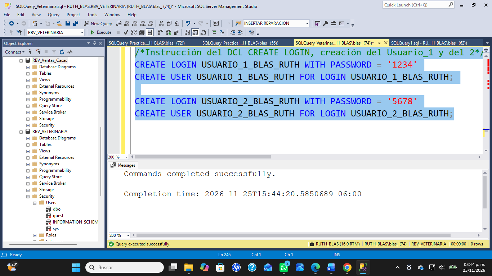
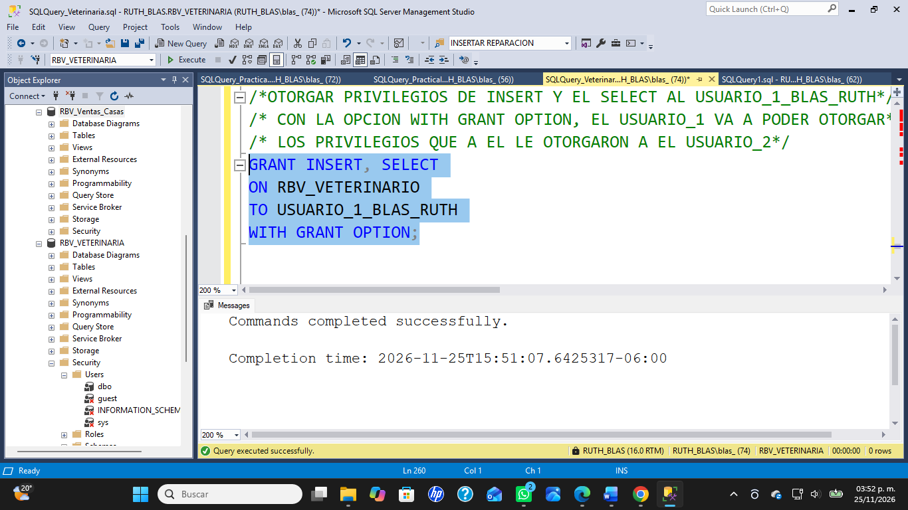
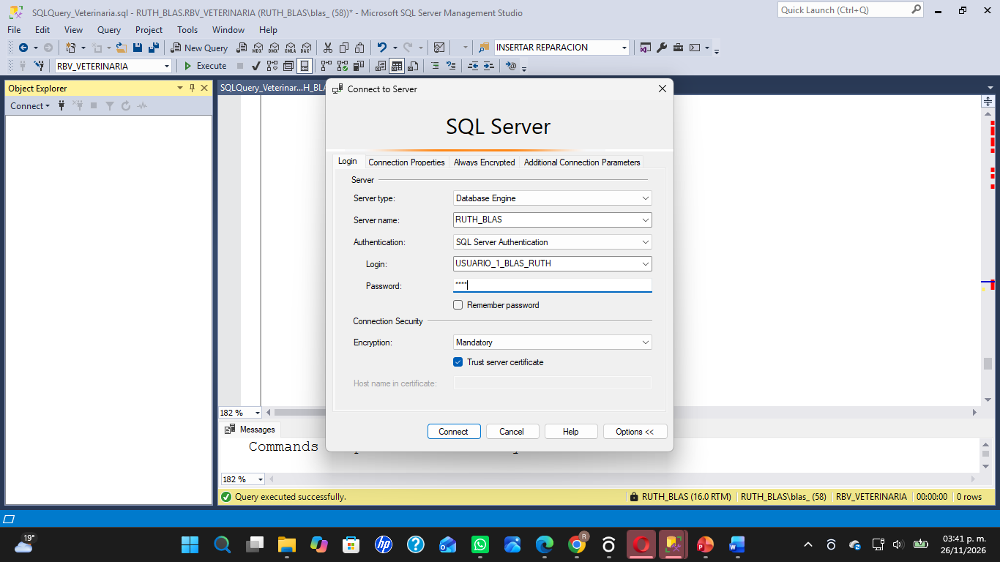
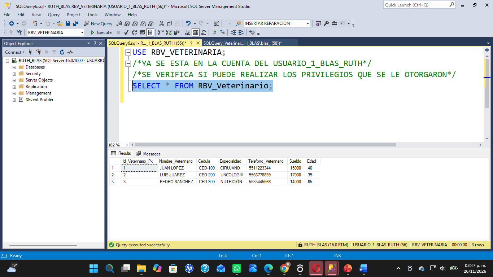
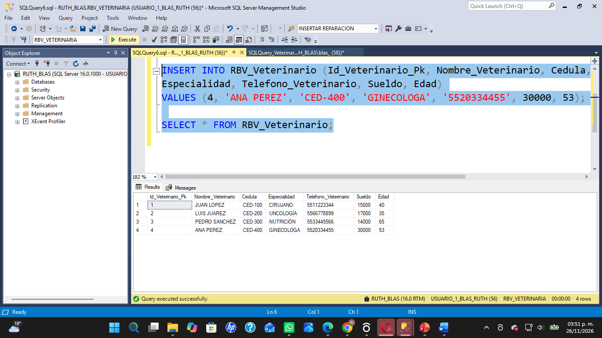
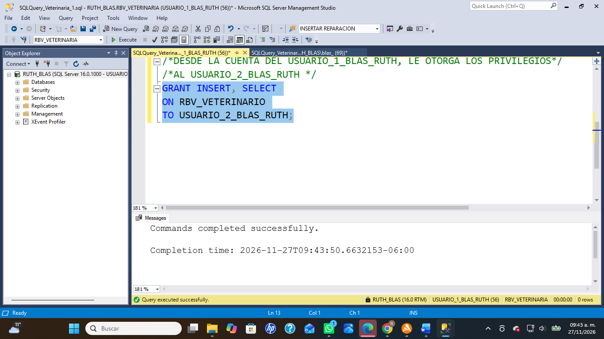
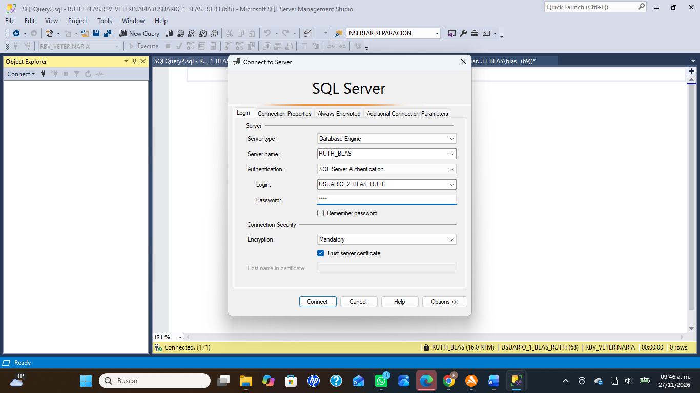
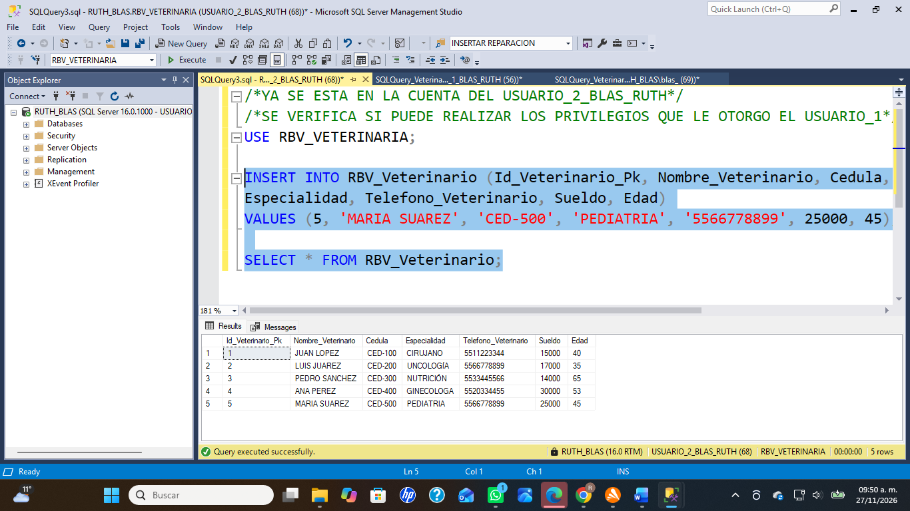
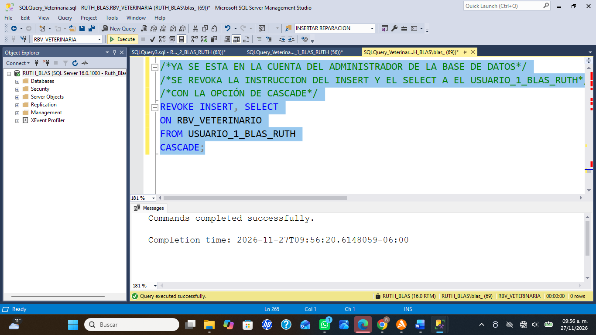
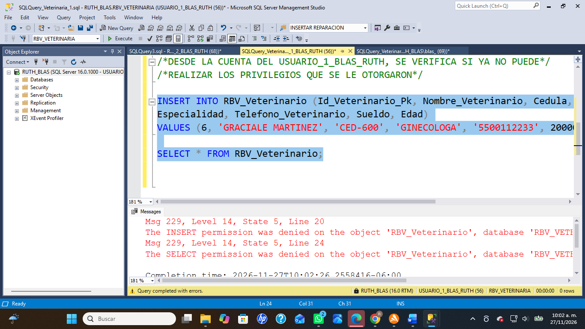
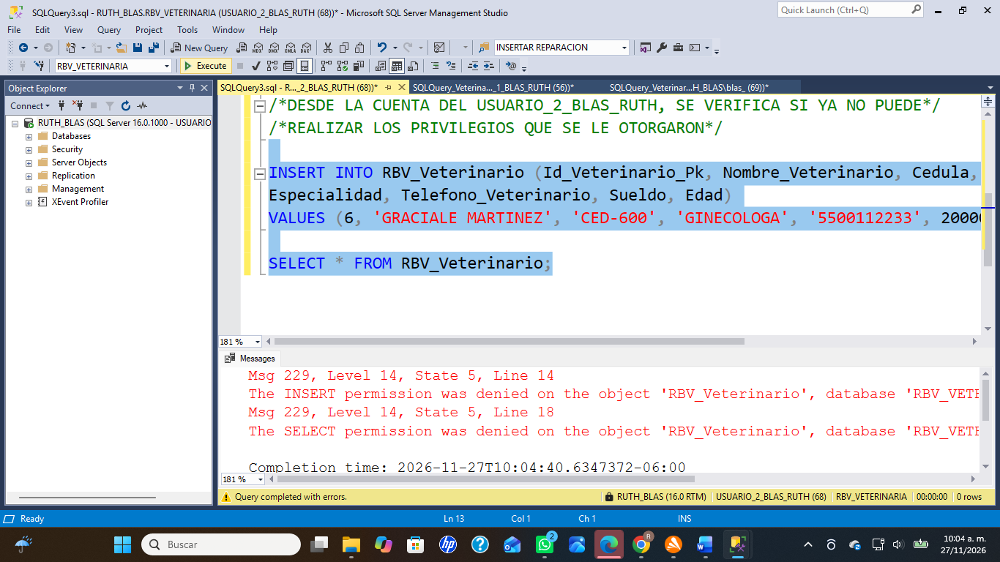